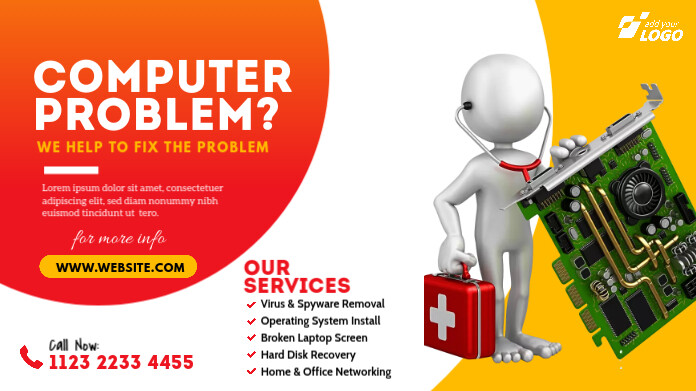
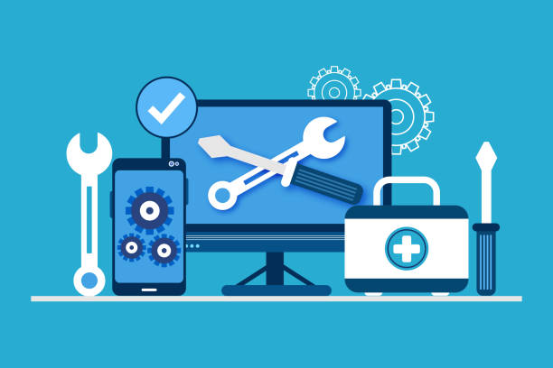

Welcome to Local Computer Repair and Services

We offer an in-depth computer repair curriculum, tailored for both beginners and professionals. Our mission is to equip you with the skills to diagnose, troubleshoot, and repair a variety of computer issues.
Why Choose Us?
Expert Instruction

Learn directly from certified computer repair professionals with years of experience.
Hands-On Learning
We provide real-world, hands-on experiences to help you apply your learning immediately.
Comprehensive Resources
Access our exclusive library of resources, including video tutorials, guides, and reference materials.
What You'll Learn
PC Hardware Basics
Gain an understanding of key hardware components and how to identify issues.
Software Troubleshooting
Learn to troubleshoot and resolve software-related issues effectively.
Network Repair

Explore network troubleshooting techniques to solve connectivity issues.